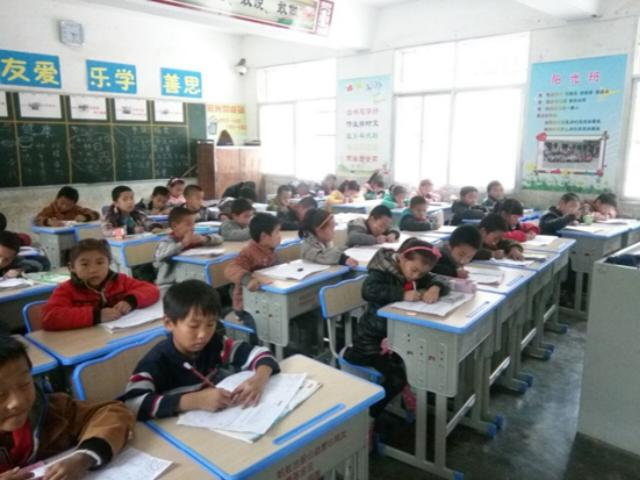
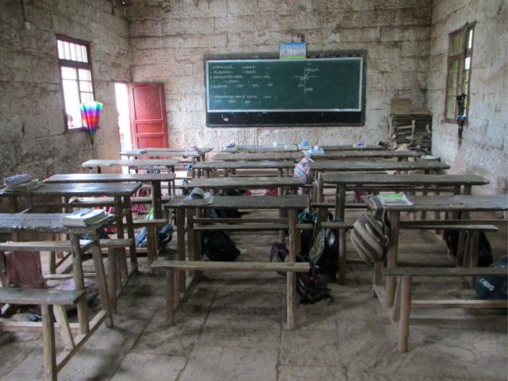
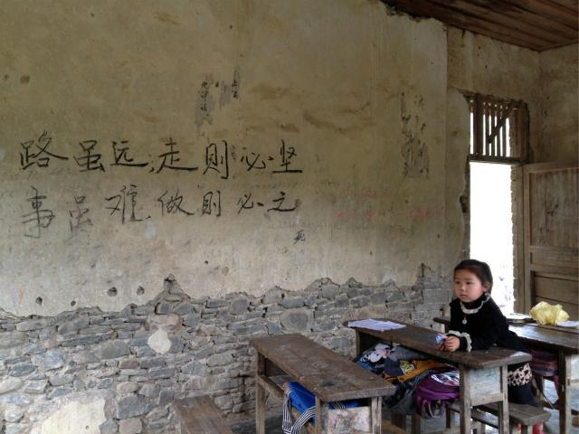
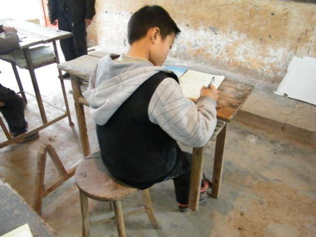
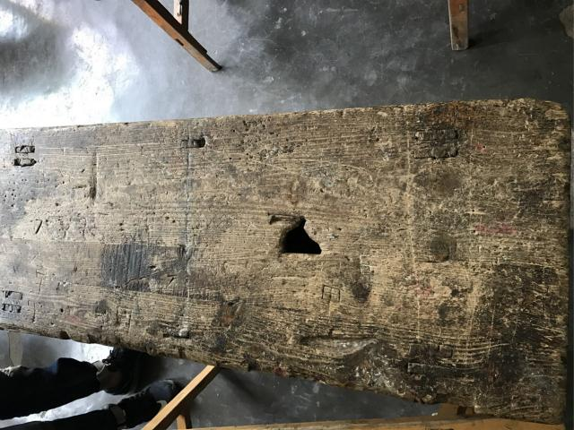
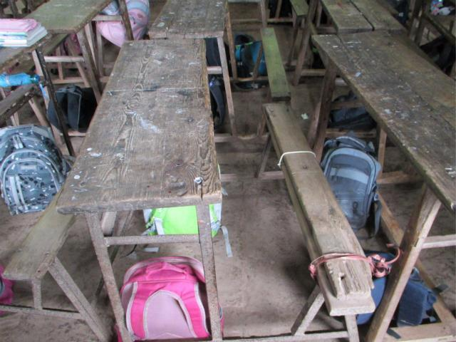
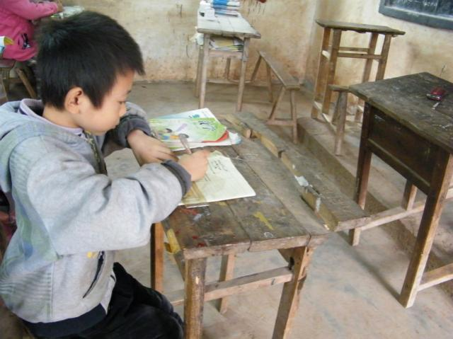
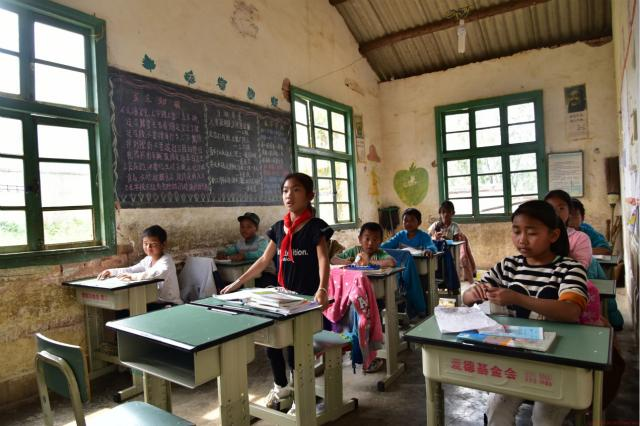
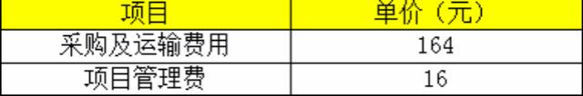

运营机构：中国社会福利基金会

拍这张照片的时候，交梨小学的同学们正在上讨论课后作业。一直趴在破旧的课桌椅上写作业的他们，字终于不再歪歪倒倒了，终于可以在平整的桌面写字了。
交梨小学的课桌椅采购自上世纪90年代，距今也有20年了，项目人员走访到学校时发现，几乎所有的课桌表面都是坑坑洼洼，如果平铺一张纸并在纸上写字的话，不一会儿，纸上就戳出无数个小洞。不少课桌的桌肚已经没了挡板，很多椅背也不知去向，只留下空荡荡的椅子金属支架，靠一下，戳得背疼。但很多孩子走过又长又窄的山路，到达这里的时候，就是在这样的环境下学习和成长的。
老师说，看着孩子们坐在又亮又新的课桌椅前读书写字，心情都变得明朗起来了！孩子们特别感谢叔叔阿姨们的关心和付出。
健康小课桌项目由爱德基金会于2011年发起，旨在让大山里的孩子用上适合他们身体发育的、设计科学的学生专用课桌椅，使他们得以在学校里愉快地学习、健康地成长。截止2017年5月底，本项目已支持17864套课桌椅，帮助西部贫困山区116所村小的孩子实现了健康求学的心愿。
【受助群体情况】
他们不知道，城市里的孩子，在怎样的学校和教室上课，唯一的心愿，就是能有一张可以安放书本、安放梦想的课桌。每天，可以在平稳的小课桌上画出对未来的希望，让平稳的小课桌伴随自己渐渐长大。
然而现实，许多山区村小设施简陋，缺少基本的教学设备，尤其课桌椅子配备不足，且陈旧的课桌椅更新换代不及时。许多好不容易获得学习机会的孩子，却只能在凹凸不平的课桌和歪斜松散的椅子上完成每天的学习，却严重影响了孩子们的骨骼发育和视力水平。
这些简陋的课桌上开了很大的口子，孩子们写字的时候不得不在桌上垫上书本，才能保证把字写工整，不戳穿本子。
虽然是旧课桌，但放学了也一样爱护的放起来。
即使桌子散架了，也要用绳子绑起来继续使用，还能做抽屉。
条件虽然艰苦，但孩子们的学习热情却丝毫不减。
【项目执行计划】
a、执行流程：来款——询价、对比价格——寻找厂家——签订采购合同——采购、备货——运输——验货——发放——反馈；
b、执行周期：1-2个月（根据课桌椅套数、厂家备货时间及运输、安装的时间决定）
c、受助人筛选标准：农村完全小学，5年内不会被撤并，课桌椅破旧，桌面坑洼，且近两年内教育局及学校无课桌椅更新计划。
【项目预算】
项目预算：180元一套课桌椅，包含：
【捐赠收据获取方式】
爱德基金会将为您开具捐赠收据，需要捐赠收据的蚂蚁金服公益爱心用户须将以下信息（捐赠人姓名、开票 抬头、金额、捐赠截图、电话、地址等）发至邮箱fangjun@amity.org.cn申请，联系电话025-83260851。基于邮寄成本的考虑，100元以上的捐赠发票将以挂号信方式寄出，100元以下的捐赠发票请您自取，建议多次捐赠累积集中开具捐赠发票。感恩您的信任和理解。
【项目备案说明】
该项目已在【慈善中国】备案，公开募捐活动备案编号：5332000050917103XBA18002，您可登录【慈善中国】查询。 慈善中国，即全国慈善信息公开平台，于2017年9月4日正式开通，是民政部依据《慈善法》关于“信息公开”要求而建设的统一信息平台，用于慈善组织、慈善信托受托人等参与主体面向社会公开慈善信息。
-
暂时没有
暂时没有
暂时没有
-
暂时没有
暂时没有
暂时没有
-
暂时没有
暂时没有
暂时没有
推荐项目
-
[医疗救助] 给困境儿童送面包
HELLO小孩”爱心套餐是中国儿童少年基金会面向广大贫困家庭儿童和留守儿童以及因自然灾害、突发事故的儿童于2015年底启动的公益项目。包括日常学生套餐和灾后应急套餐两款，根据季节不同，又分为春夏和秋冬两个搭配方案
-
[其他] 爱的分贝 救救耳朵
2017年9月1日，极重度听力障碍的康康成为了一名一年级的新生，康康妈妈像所有的学生家长一样，开始每天检查康康作业督促他学习；跟其他妈妈不一样是，她要不时开导康康：耳蜗就像眼镜，不能摘，摘了就听不到了。因为康康现在就读于普通小学，他非常渴望和同学们一样不用带他的“小耳朵”去上学